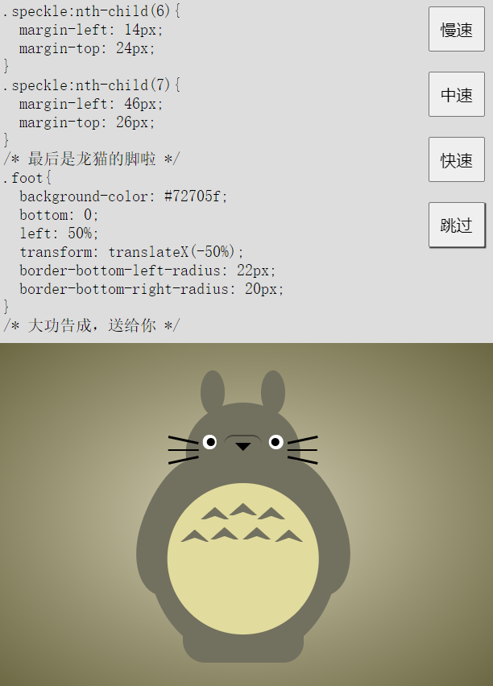
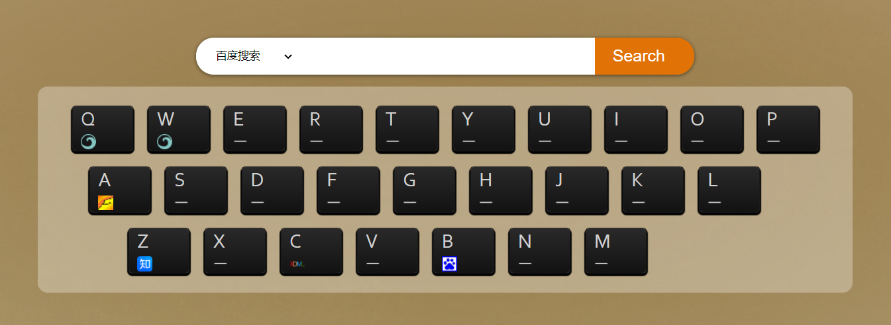
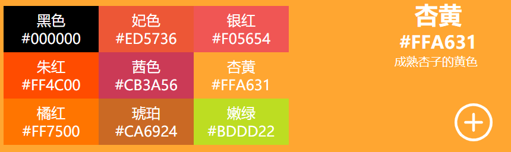

自学 react，移动端两年开发经验，熟悉 Ionic、Angular、TypeScript、SCSS，了解 Android native 开发。
写文档、写注释、写干净的代码，致力于让一切东西条理化。 热爱编程，乐于学习新的技术。
技能
- React 理解 react 思想，熟悉 react、redux、react-router，能够使用 Hooks、Context 进行 react 开发，了解 css-in-js 的样式方案，能够使用 styled-component 。
- TypeScript 熟练使用 TypeScript 进行开发，了解静态类型检查。
- SCSS 了解 @mixin、@include、@function 等的使用，熟练使用变量和嵌套，能够根据不同的问题去查询不同的解决方案。
- 移动端 熟悉基于 Angular 的 Ionic 使用、环境配置、打包等；熟悉 Android APP 创建、打包等系列流程，了解 Android native 开发。
- Bootstrap 初步了解 Bootstrap，能够使用 Bootstrap 快速制作页面。
- jQuery 能够使用 jQuery 进行 DOM 操作，实现 精美轮播图 。
- Node.js 简单了解 node.js，可以使用 nodejs 搭建简单后台，根据浏览器发送的不同请求路径给出不同的响应。
- HTTP 了解 http 协议，能够看懂 http 请求和响应，了解常见状态码含义。
- HTML5 & CSS3 可以根据 HTML5 标准编写语义化的文档结构，掌握 CSS 选择器、常见样式、堆叠上下文、常用居中方案以及常见布局（float 布局和 flex 布局），能使用纯 CSS 实现一些简单有趣的效果比如 旋转的太极图 。
- 原生 JavaScript 了解 js 数据在内存中的存储方式，熟悉 DOM 常用 API、JS 数组以及数组的一些常用方法，掌握事件的捕获与冒泡，了解 js 的变量提升机制，知道 js 闭包、浏览器的同源策略和跨域方法、JSONP、AJAX、原型链、继承、new 和 this 相关知识，理解 MVC 思想并能在实际中运用。
- 响应式 可以根据 viewport，媒体查询以及动态 rem 制作响应式页面。
- 前端构建工具 了解 webpack、babel 的使用。
- CET-4 熟练阅读英文文档。
作品集
-

画一只龙猫 CSS 该项目使用 jQuery 和 CSS 实现，展示了动态画一只龙猫的过程，并添加了调速按钮。用 css 画出来之后，将代码剪切到 js 中去，然后由 js 将代码放到页面的 style 标签里，从而将过程展现出来。 -
做一个导航 JavaScript  该项目使用 原生JS 实现，实现了 搜索（包括百度搜索和 Google 搜索） 和 网页导航 功能。使用 新建 form 的形式发送 GET 请求实现搜索功能；使用 localStorage 存储虚拟按键对应的网址；监听键盘事件打开网址。 -
我的色卡 React  该项目使用 React 实现，是一个可以 点击切换颜色、添加颜色的在线色卡。在 react 的基础上，使用 styled-components 插件进行样式的书写，使用 useState 在函数组件中使用 state，使用 Context 进行全局样式的传递和修改，使用 localStorage 进行色卡的持久化存储。
工作经历
2018/09-2020/10 杭州声德科技有限公司
-
Retail Ionic3 软件描述：商店综合管理系统，Ionic3 项目。已在 PAXSTORE 上发布。该项目中我负责 前端和权限控制 部分。
主要功能：商店员工上下班打卡、商品进销存管理、会员信息管理等
技术细节：使用 CSS 的变量 实现 主题颜色的动态切换 以及 自定义主题颜色 ；使用 SCSS 的 @mixin, @include 和 @content 统一 媒体查询 ，做 多屏兼容 ；在用户登录的时候从 SQLite 数据库中获取权限并将所有权限整合到一起，放在 localStorage 里边，根据权限判断菜单的显示与隐藏、display 与 disable。
-
IMPrint Android 软件描述：查询店铺订单并打印。原生 Android 项目，运行在 pax 系列机器上，已在 PAXSTORE 发布。该项目 主要由我负责 。
主要功能：软件激活、订单查询、订单列表展示、订单信息查看并打印。
技术细节： 使用 BoradcastReceiver 接收广播，获取激活数据，读取激活信息并写入文件；使用 OKHttp 发送 POST 请求 进行订单查询获取数据；使用 Adapter 将数据放到 ListView 上，展示订单列表；使用 intent 进行 页面的跳转 和页面间的 信息传递 ；使用 drawable 绘制 按钮样式 ；使用 BindView 获取元素 并绑定监听事件；使用 Bitmap 将订单信息 生成图片 ，调用打印接口进行订单信息打印。